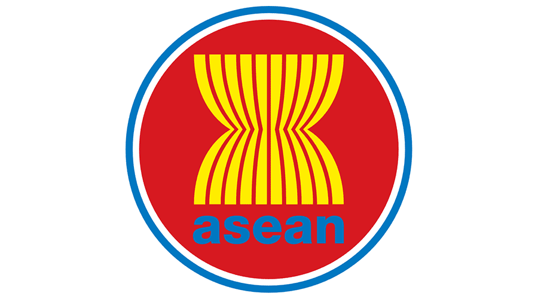

Kerjasama yang meliputi lebih dari dua negara dalam kawasan atau wilayah geografis yang sama. Negara-negara dalam satu kawasan biasanya terdapat kesamaan budaya, sejarah, atau kepentingan ekonomi, sehingga mendorong adanya kerja sama. Kerjasama ini berfokus pada kepentingan bersama negara-negara yang terlibat dan dapat dilakukan dalam bentuk perjanjian atau organisasi.
Tujuan Kerjasama Regional
- Menyelesaikan konflik regional
- Memperkuat identitas regional
- Memajukan negara-negara dalam kawasan tersebut
Contoh Kerjasama Regional
Politik: ASEAN (Association of Southeast Asian Nations)
Militer: NATO (North Atlantic Treaty Ogranization)
Ekonomi: AFTA (ASEAN Free Trade Area)